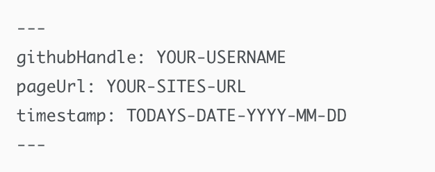
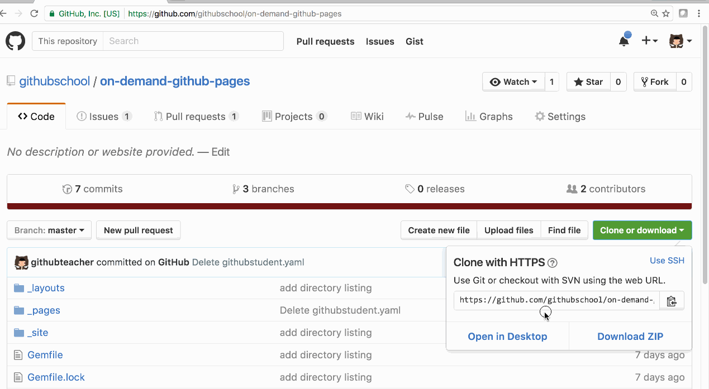

Now that you are a collaborator, let’s use the local workflow we just learned to make changes to this repository:
- Start from the Code tab of the class repository on GitHub.com.
- Click on
Clone or Downloadand selectOpen in Desktop. - Confirm where you’d like to save your project on GitHub Desktop.
- Create a branch and label it with your username, something like
yourUsername-add-page. - In your favorite text editor, add a file to the
_pagesdirectory. Include your GitHub handle in the filename:username.yaml. - Enter the following content into your file: 
- Ensure you’ve replaced
YOUR-USERNAMEwith your GitHub Username,YOUR-SITES-URLwith the URL to your site (which should beYOUR-USERNAME.github.io), andTODAYS-DATE-YYYY-MM-DDwith today’s date, using a 4-digit year, 2-digit month, and 2-digit day. For example, if today is October 17, 2016, you would enter:2016-10-17. - On GitHub Desktop, within the
Uncommitted Changestab, ensure your file is checked. - On GitHub Desktop, enter a commit message describing the change you’re introducing to the project.
- On GitHub Desktop, click the
Commit to YOUR-BRANCHbutton – ensureYOUR-BRANCHincludes your username.
Show me how

Tell me why
Reviewing the GitHub Flow
Remember, the 5 steps of GitHub Flow are:
- Create a branch (This section deals with this step.)
- Make commits (And this one.)
- Open a Pull Request
- Collaborate, and make more commits
- Merge the Pull Request
Hopefully this looks familiar since you’ve followed this workflow (at least) twice. Now you will follow it once more to add your page to our directory.
Need help? Click open chat below for answers from GitHub trainers!
Continue